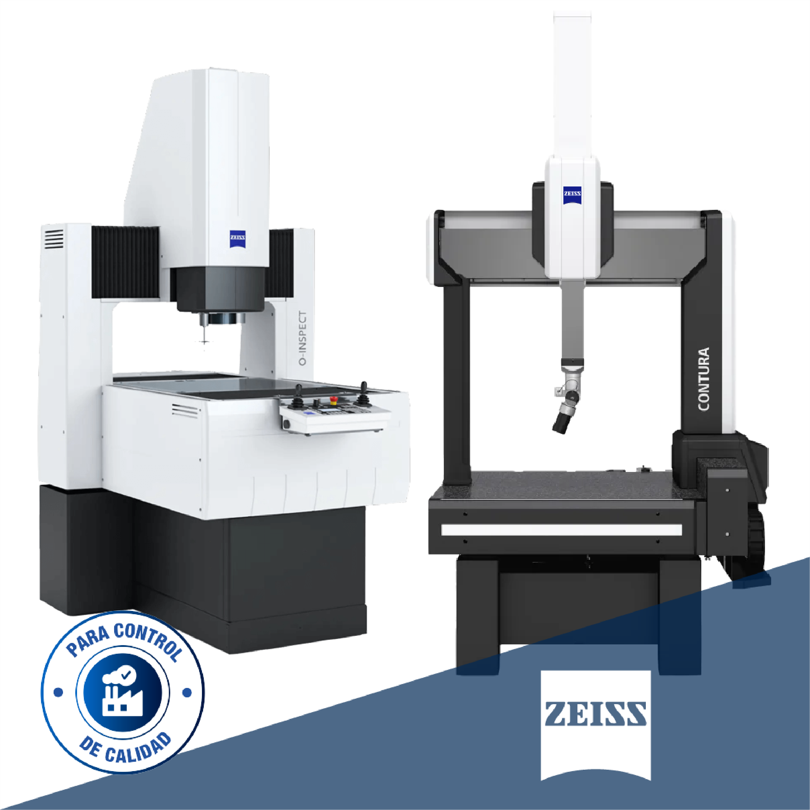
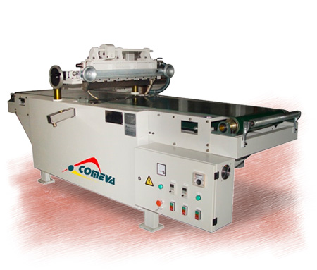
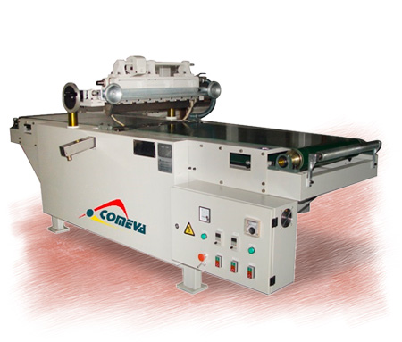

¿Qué es el Análisis de Superficies?
Es el estudio detallado de la calidad superficial de las piezas a maquinar. Se evalúan parámetros como rugosidad, forma, orientación y ondulación.
Tipos de Superficies
- 🔹 Superficies Planas
- 🔸 Superficies Cilíndricas
- 🔹 Irregulares o Libres
- 🔸 Roscadas o Estriadas
Factores del Análisis
- ✔️ Rugosidad superficial (Ra, Rz)
- ✔️ Material de la pieza
- ✔️ Herramienta de corte y velocidad
- ✔️ Acabado requerido
 
